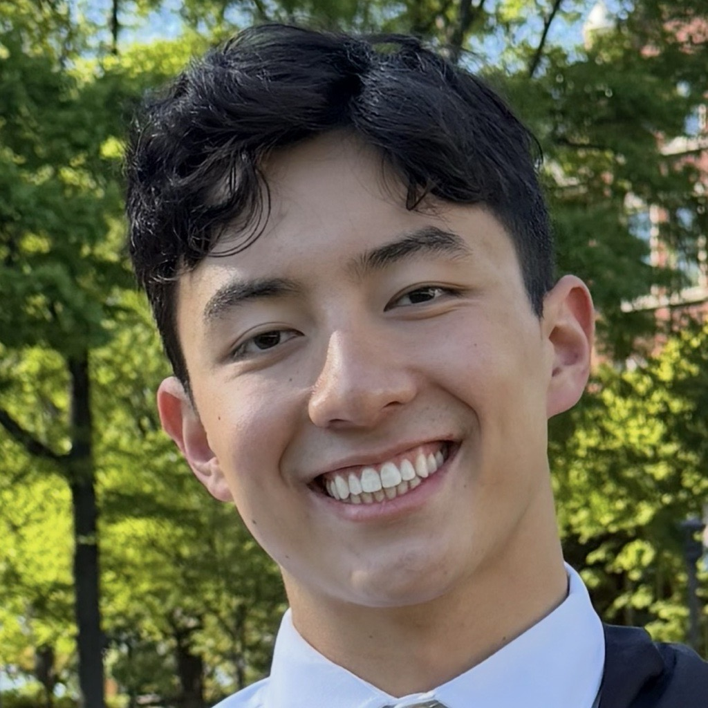
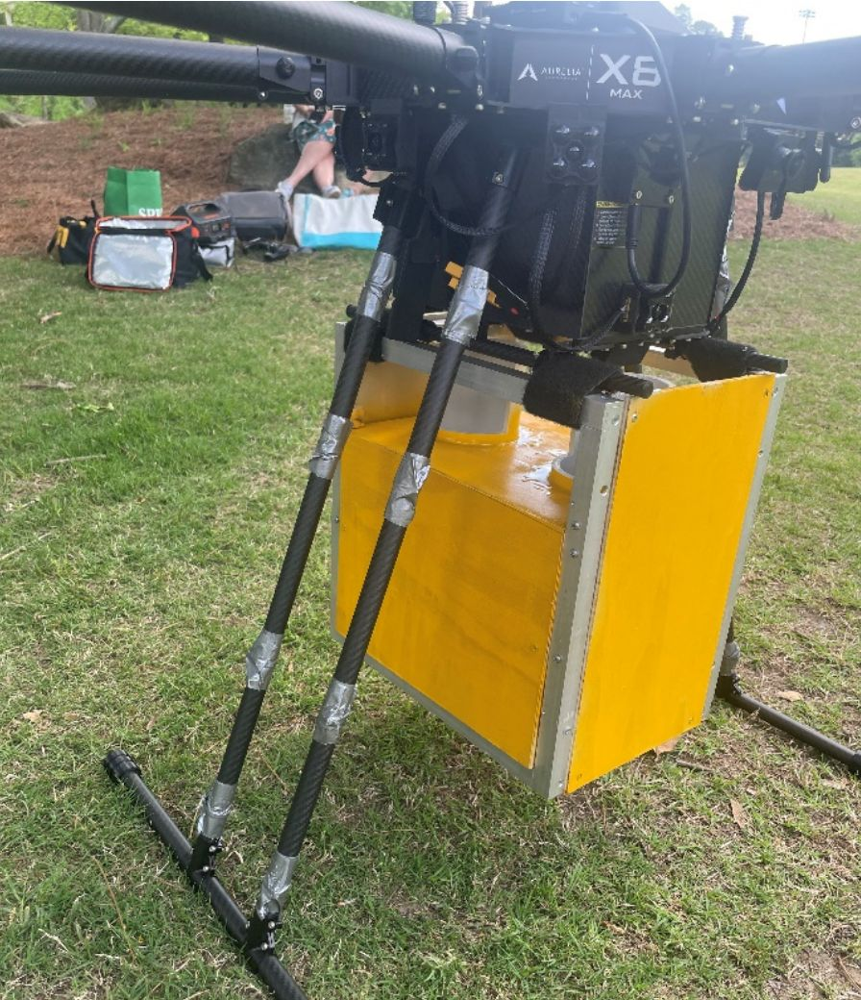
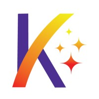
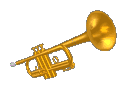
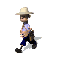

Hi there, I'm
Stephen Jones

Robotics and mechatronics engineer. I design and build hardware, then write the firmware and vision code that makes it work.
Georgia Tech BS Mechanical Engineering (2026). Now earning an MS in Computer Science, Computational Perception & Robotics, through OMSCS. Based in Atlanta, open to internships, co-ops, and full-time robotics roles.
At a glance
Top 30of 300 teams, XPRIZE
1stof 5 teams, ME 2110
0 Whold power, SMA claw
60+teammates as captain
Projects
Tap a project to expand it. Each one links to a full case study with photos, data, and what went wrong.
SMA perching clawSenior capstone with Khanjur R&D, Project Manager and Mechanical Lead

- Problem
- Drones burn power hovering, so they cannot watch a site for long.
- Approach
- A ratchet-locked claw holds a pipe at 0.0 W, and shape memory alloy releases it.
- My role
- Led the team, wrote the specs and decision matrix, designed the linkage and actuation options, and built Prototype A.
- Result
- Zero-power hold demonstrated on printed prototypes, plus bench data on how the SMA behaves and fails.
Nitinol SMASolidWorks3D printingRatchet designPower analysis
Drone fire-suppression payloadXPRIZE team: Better Place Drones

- Problem
- Carry a water payload on a drone without adding much weight or complexity.
- Approach
- A CO2 canister pressurizes a tank so the stored pressure pushes the water out.
- My role
- Designed the blowdown system on the payload subteam and coordinated with five other subteams.
- Result
- Team placed in the top 30 of 300 entries.
SolidWorks3D printingPressure systemsSystems integration
ME 2110 competition robotTeam of three, Spring 2024

- Problem
- Win a head-to-head robot competition with strict size, cost, and rules limits.
- Approach
- QFD and weighted decision matrices to pick concepts, then rapid prototyping and FMEA.
- My role
- Design, fabrication, and C++ control with two teammates, 30+ hours a week.
- Result
- 1st place out of 5 teams.
SolidWorksC++ArduinoQFDFMEA
Concrete vision sorterDeep learning, class project

- Problem
- Automatically tell cracked concrete from intact concrete.
- Approach
- Frozen VGG16 features, PCA to find redundancy, and a logistic regression classifier.
- My role
- Built the whole pipeline and the error analysis by crack style.
- Result
- 99.5 to 99.8% accuracy on held-out images across runs, with about 80% fewer dimensions.
PythonTensorFlowscikit-learnPCAK-Means
ABS braking simulationMATLAB controls project with two teammates

- Problem
- Keep a car stopping hard without locking the wheels as the road changes from pavement to ice.
- Approach
- A block-diagram model with a pedal assembly, disc brake geometry, and a bang-bang ABS module, in nonlinear and linearized forms.
- My role
- Co-wrote the MATLAB model and plots with Josh Chung and KC Hinz for ME 3017.
- Result
- Deceleration tracked the road friction limit (about 8 m/s² on pavement, 2.9 on ice), and the linearized model matched the nonlinear one within about 1%.
MATLABControl theoryNonlinear modelingLinearization
Experience

Jan 2026 to May 2026Lead Mechatronics Engineer, Khanjur R&D (senior capstone)- Designed and built a wireless robotic gripper actuated by Nitinol wire, replacing bulky motors with a quiet, high power-to-weight actuator.
- Programmed an ESP32 to host a local Wi-Fi web server for smartphone control, with embedded C++ firmware.
- Built PWM-driven MOSFET switching circuits to regulate current through the Nitinol wire without overheating it.
 May 2025 to Jul 2025Fire Protection Engineer Intern, Jensen-Hughes
May 2025 to Jul 2025Fire Protection Engineer Intern, Jensen-Hughes- Drafted life safety drawings in AutoCAD and Bluebeam Revu to NFPA 13 and NFPA 72.
- Joined client meetings on large projects.
 Aug 2024 to Dec 2024Research Assistant, Better Place Drones, XPRIZE team
Aug 2024 to Dec 2024Research Assistant, Better Place Drones, XPRIZE team- Designed a CO2-driven blowdown system to deliver a fire-suppression payload.
- Coordinated with five subteams from SolidWorks drawings to a proof of concept.
 Spring 2024Team member, ME 2110 competition robot
Spring 2024Team member, ME 2110 competition robot- Designed, built, and programmed an autonomous robot that took 1st of 5 teams.
Skills
Hardware
ESP32ArduinoPWM and MOSFET circuitsSensor integrationSoldering3D printingLaser cutting
Software
PythonC and C++MATLABTensorFlowscikit-learnOpenCVGit
ROS 2 (learning)
Mechanical and process
SolidWorksAutoCADFMEAQFDStructural analysisDesign for manufacturing
Gold badges are skills I am actively building.
Education and leadership
- Aug 2026 to Dec 2028MS Computer Science, Computational Perception & Robotics, Georgia Tech (OMSCS)
- Coursework in machine learning and robotics perception.
- Aug 2022 to May 2026BS Mechanical Engineering, Georgia Tech
- Circuits and electronics, system dynamics, heat transfer, data structures, machine learning.
- 2022 to 2026Division I swimmer and Team Captain (2024-25), Georgia Tech Swim & Dive
- Led communication for 60+ teammates and the men’s recruiting process.
- 2024 Brandon Adams Teammate Award, voted by teammates and coaches.
Beyond engineering

One Piece1,100+ episodes watched
Retro arcade gamesSF2, Robotron, and Tempest

Let's talk
I am looking for robotics, mechatronics, and embedded roles where I can build real hardware and learn fast.